Fitwell for Claude
Track food, training and weight by talking to Claude
Tell Claude what you ate, ask it to plan your week, start a workout from the chat and open a dashboard when you want to see how you are doing.
- Claude on desktop, web and iPhone
- Health data stored in the EU
- Invite-only: ask for one
Updated 16 October 2026: your measured calorie burn, a muscle map, warm-ups, supersets, plates and swaps in the workout player, and quicker logging.
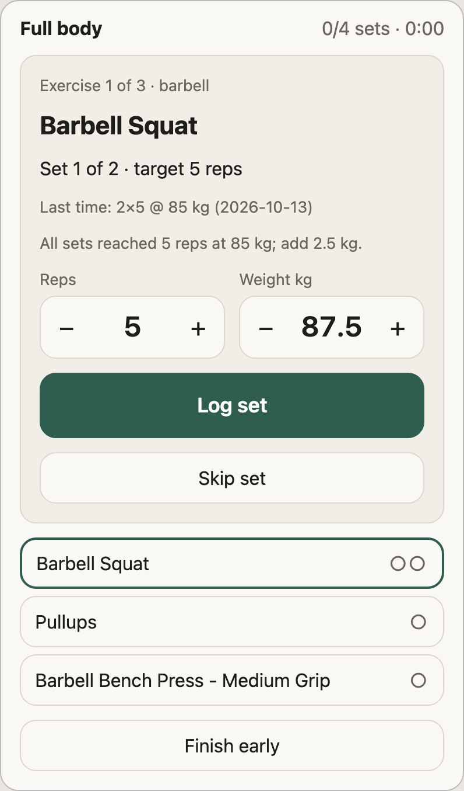
You talk, it keeps the records
Three things you might say in a normal week. The numbers in the replies come from the demo person used for the screenshots on this page, and Claude's exact wording will differ.
Food and macros without the typing
Describe a meal in your own words. Claude turns amounts into grams, finds each food in a database and saves calories, protein, carbs and fat.
- 1,381 everyday foods from Frida, the Danish national food composition database, plus packaged products by barcode through Open Food Facts.
- The numbers come from the food's own data. When nothing matches, Claude says so and any estimate is marked as one.
- "Same breakfast as yesterday" or "copy Monday's lunch" repeats a meal in one step. A meal you eat often can be saved once and logged by name.
- Snap a nutrition label and Claude saves the product. Fitwell checks the numbers add up, and catches the classic mistake of reading kJ as kcal.
- What is left of your calorie and macro goals for the day.
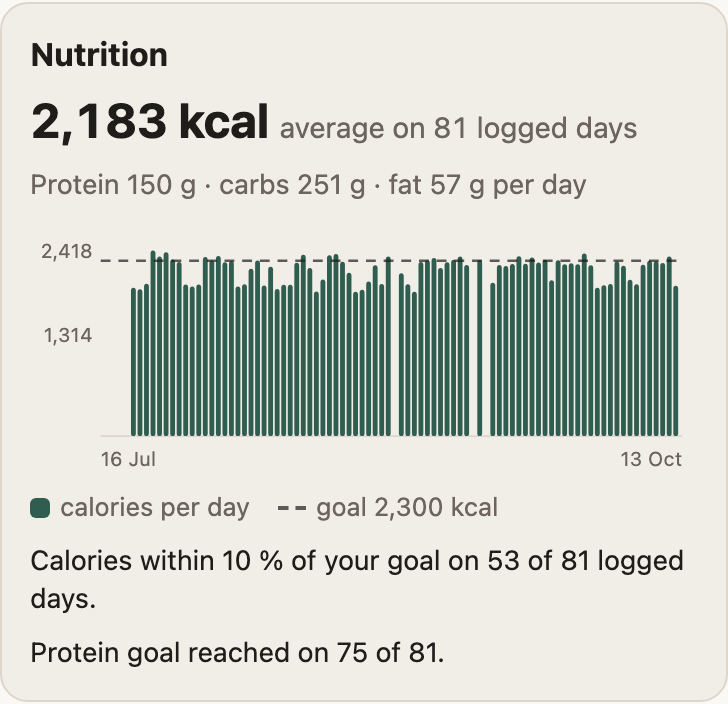
A calorie goal that learns your real burn
Formulas guess how much you burn. Fitwell measures it: after a few weeks of logging food and weighing in, it compares what you ate with how your weight actually moved.
- Your burn per day, with how sure it is. Days that look half logged are left out, so a forgotten dinner does not count as a low day.
- The calories for your goal weight at a steady pace, and the date you reach it at your current trend.
- The weekly review brings it up when your goal is off by 100 kcal or more. Claude asks before changing anything.
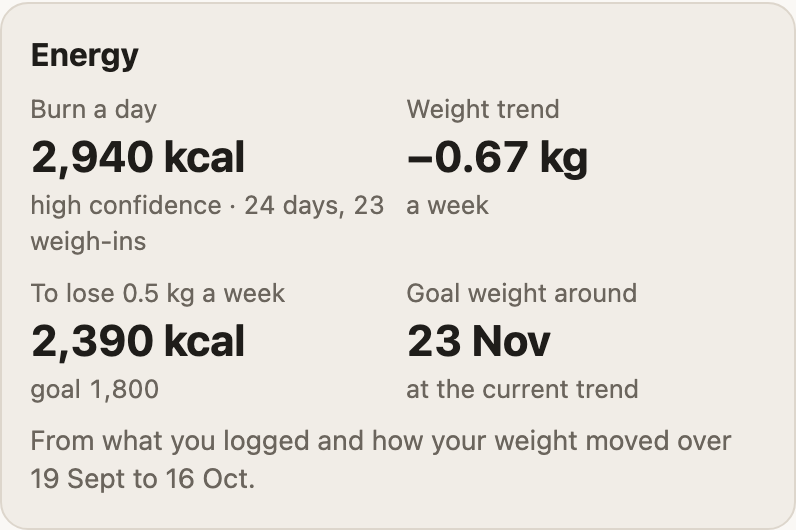
A week of meals, checked, with the shopping list
Claude proposes a week from your goals, your allergies and dislikes, the foods you really eat and your saved recipes. Before you see it, Fitwell checks every day against your calorie and protein goals and every item against your allergy list.
Monday in the demo plan
| Meal | What | kcal | Protein g |
|---|---|---|---|
| Breakfast | Overnight oats with berries | 525 | 24 |
| Lunch | Chicken, rice and broccoli (1.5 servings) | 993 | 82 |
| Dinner | Salmon with potatoes and spinach | 582 | 40 |
| Snack | Skyr, 0.2 % fat | 153 | 27 |
| Day | 47 kcal under the 2,300 kcal goal, 23 g over the 150 g protein goal | 2,253 | 173 |
Cook once
- Overnight oats with berries cook 7 servings once, eat on 7 days
- Chicken, rice and broccoli cook 10.5 servings once, eat on 7 days
- Salmon with potatoes and spinach cook 7 servings once, eat on 7 days
Allergy and dislike matches are found by name in every item and ingredient. Say "I ate Tuesday's dinner as planned" and Claude adds it to your food log.
The shopping list for that week
Ingredients added up across all meals, rounded up to what a shop sells, in shopping order. Tick items off to try it.
Produce
Meat
Fish and seafood
Dairy and eggs
Pantry
Foods you already have at home can be left out, and the amounts scale for more people.
Take the list to the shop
"Open my shopping list" shows the week's list inside the chat as a checklist, grouped by the sections of the shop. Tap an item to tick it off. Your ticks are saved, so you can close the chat and come back to the same list.
- Say how many people you cook for and what you already have at home, and the list adjusts.
- Ask Claude "what is left to buy?" and it can tell from your ticks.
- Light and dark themes follow your Claude app.
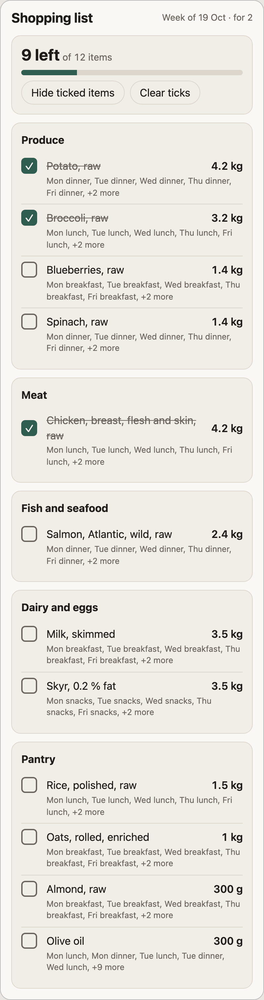
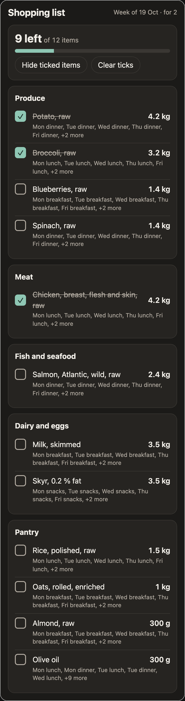
Training you can start from the chat
Claude plans the session, then opens a workout player right in the conversation. Log each set with big buttons, watch the rest timer and finish with a summary that goes back to Claude.

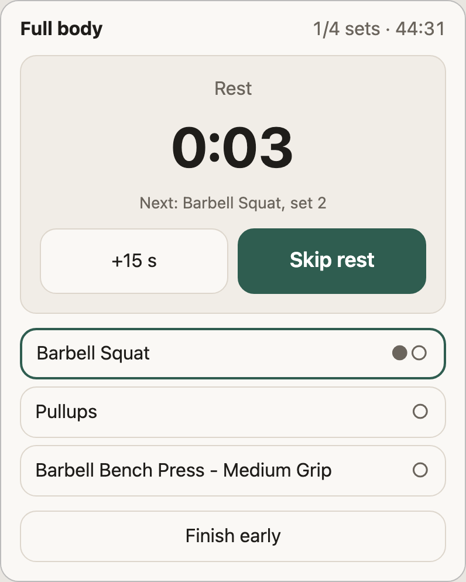
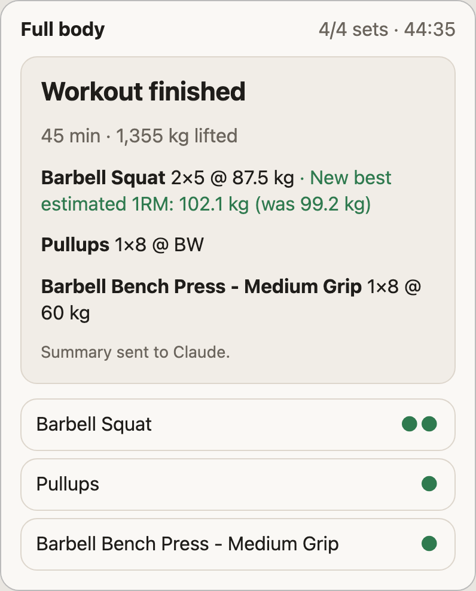
- 876 exercises to choose from, by name, muscle and equipment.
- Weights are filled in from your history by a fixed rule: add 2.5 kg (2 kg for dumbbells) when every set hit its reps, repeat after a miss, ease off about 10 % after two misses in a row, and for bodyweight moves add a rep. The player shows why.
- Save a workout as a template ("Push day") and start it again later.
- Log runs and rides with a calorie estimate, or tell Claude about a workout you already did.
Warm-ups, plates, supersets and swaps
The player now handles the details you would otherwise keep in your head.
- Warm-up sets are planned for you on heavy barbell lifts: a ramp from the empty bar for the first lift, a short one for later lifts. They are marked, rest is short, and they never count in your records.
- Plates per side for every barbell weight, from your own bar and plates ("I have a 15 kg bar and no 25s").
- Supersets go round by round: a set of one exercise, straight on to the next, and the rest comes after the round.
- Timed exercises like planks get a seconds counter and a countdown.
- Swap an exercise when the machine is busy: similar exercises for the same muscles, within your equipment. Sets, reps and your note stay, and the weight comes from your history with the new exercise.
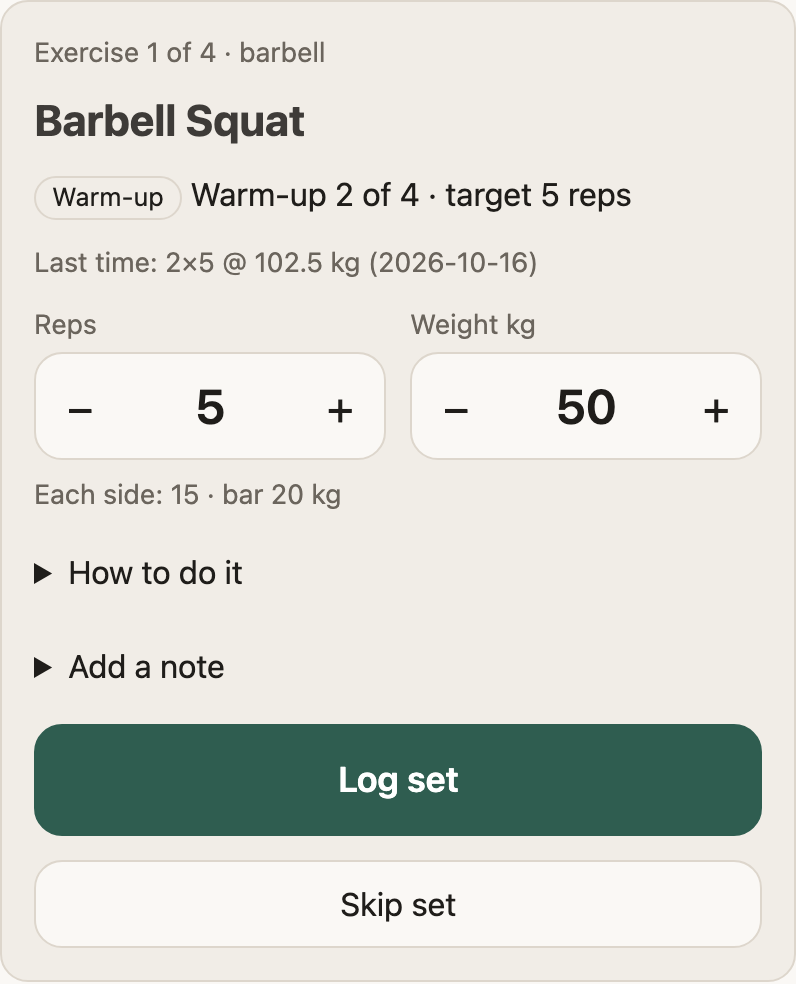
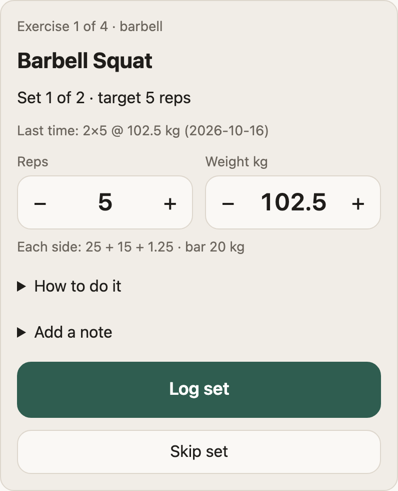
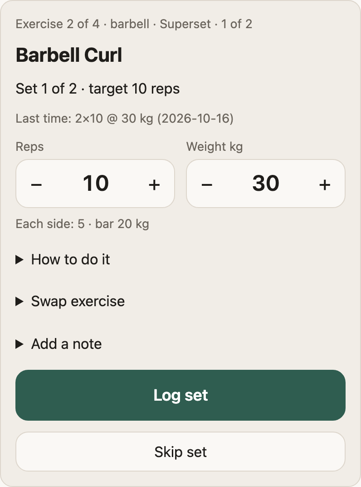
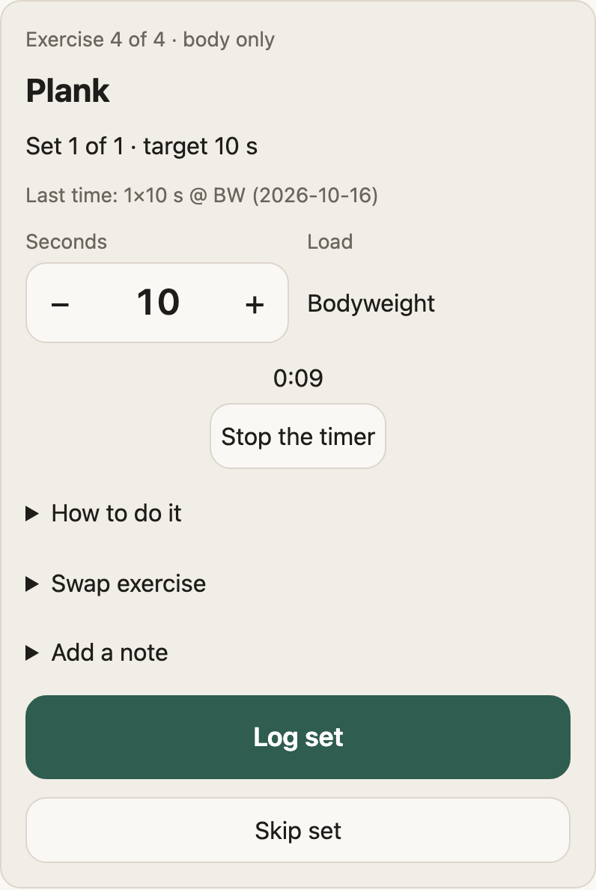
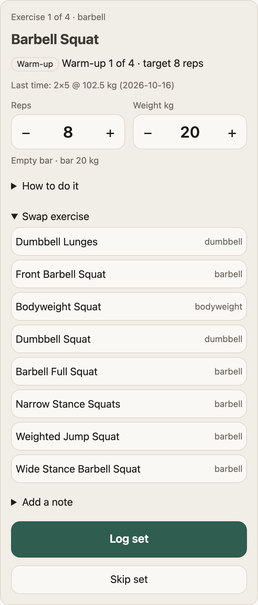
The player tells you what is next
While you rest between sets, the player already shows what comes after: the next set or exercise with the reps and weight to use, what you did last time, and your own note for it.
- "Add a 5 minute rower warm-up and a 10 minute run at the end" works in a plan or a saved template. Cardio shows up as steps in the list, with minutes and distance you can adjust. It counts as cardio time in your stats, not as a second workout.
- A note per exercise ("seat 4", "slow on the way down") is saved when you leave the field. Next time the player reminds you of it as "Last note", and the summary Claude gets includes it.
- When the last exercise is done, the player goes straight to "Finish and send to Claude".
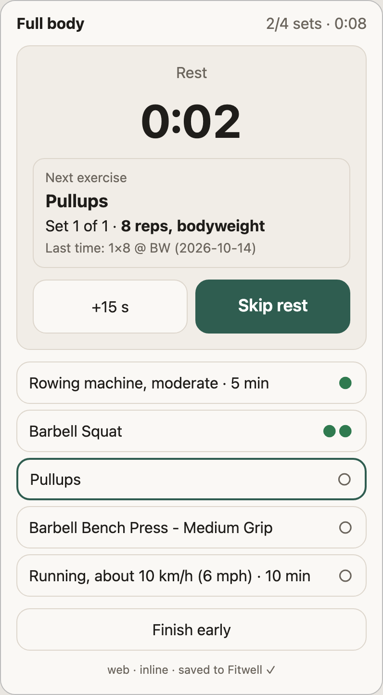
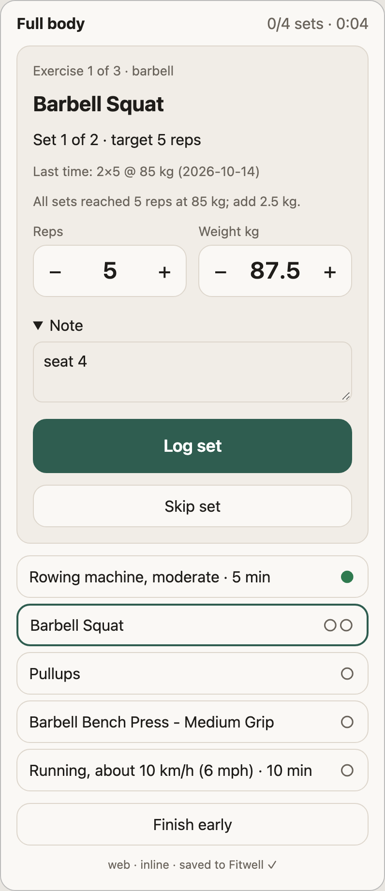
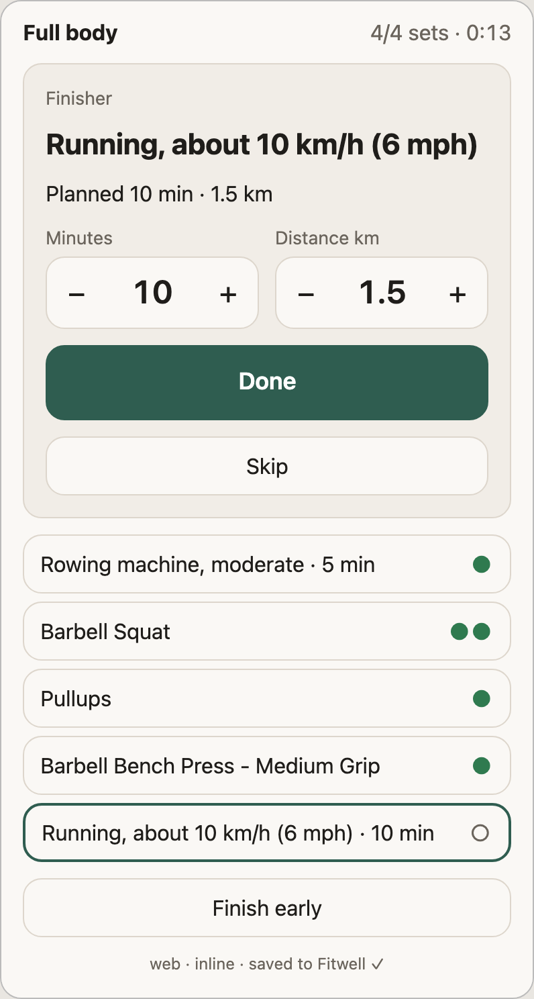
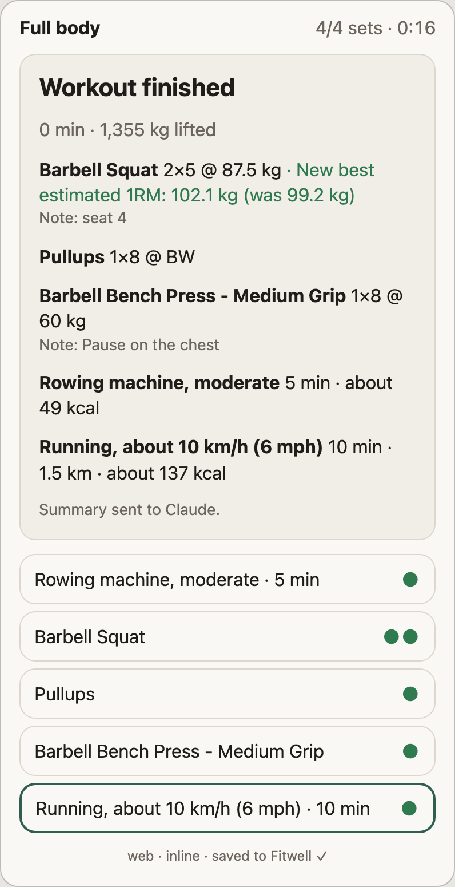
How to do it, including the machines
Ask "how do I do a leg press?" and Claude opens a guide. The workout player has the same guide under "How to do it" on every exercise.
- A 3D body you can turn around with a finger or the mouse, with the main muscles tinted strongly and the helping muscles lightly. Squats, deadlifts, bench and overhead presses, rows, curls, pull-ups, lunges, push-ups and many machine, Smith machine and cable exercises are animated, with the form checked: the bar stays over the middle of the foot, the forearms stay vertical at the bottom of the bench press, and so on. Every other exercise shows the body at rest with its muscles lit.
- Step-by-step instructions for all the exercises in the library.
- For machines and cable stations: how to set the seat and pads, what good form feels like and the common mistakes, written for Fitwell.
- A button that searches for a demo video of the exercise. There are no photos yet, because the free exercise images have no clear license.
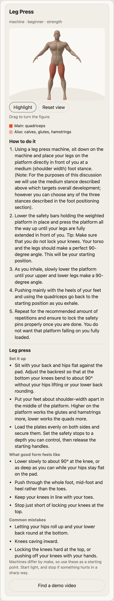
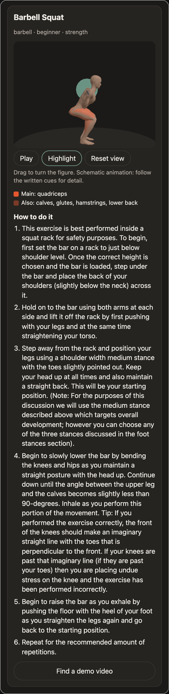
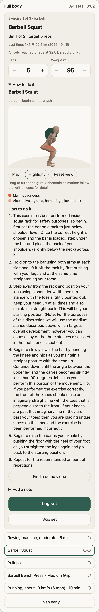
Which muscles you actually train
Ask "which muscles did I train this month?" and the 3D body comes back coloured by how much work each muscle group got: hard sets per week against the usual 10 to 20 for muscle growth.
- Grey for not trained, blue for under the range, green for in it, orange for over it. Switch between 1, 4 and 12 weeks and turn the body to see the back.
- Every muscle is listed with its sets per week, the exercises that gave them and when you last trained it, so colour is never the only clue.
- A set counts fully for the muscles an exercise mainly works and half for the ones that help. The range is a rough guide for the big muscle groups.
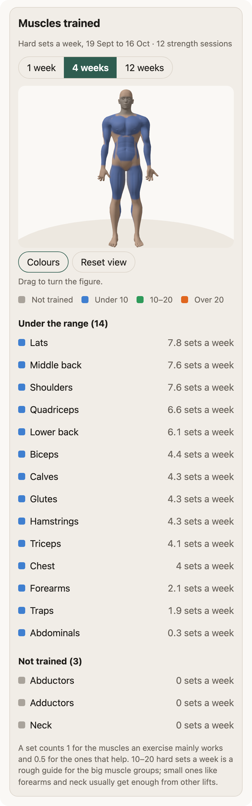
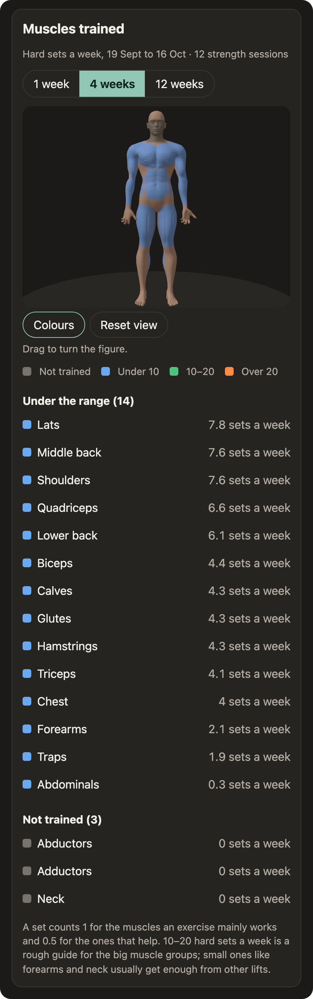
See how you are doing
Ask "how am I doing?" and a dashboard opens in the chat, for the last 30 days, 90 days or a year. Scroll inside either phone below to see all of it.
- Weight is shown as a 7-day average, because a single weigh-in swings with water and food. In the demo the average moved down 4.4 kg over 90 days.
- Calories and macros against your goals, workouts per week, working sets per muscle and the estimated one-rep max of each lift over time.
- Sleep, steps and water per day, charted once you start logging them.
- Waist, hips and other measurements, with a chart for each one.
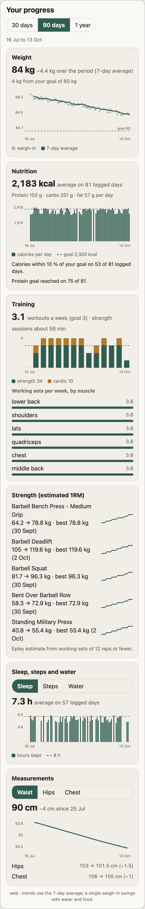
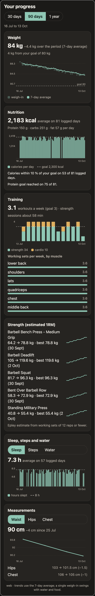
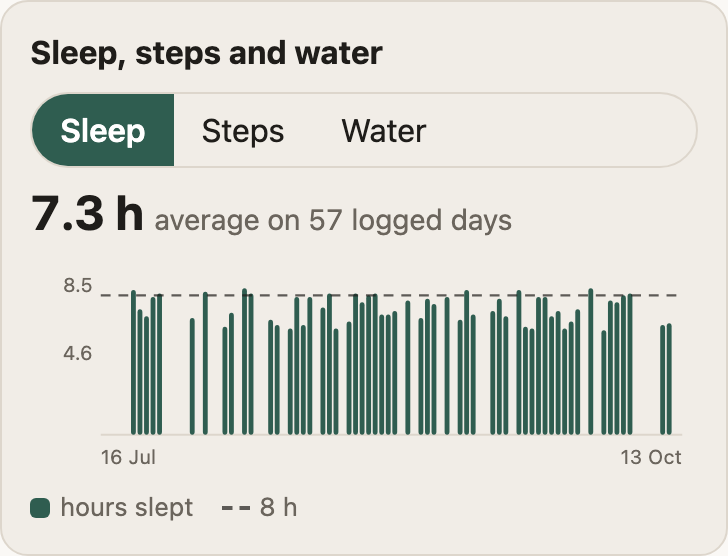
A weekly review, not just numbers
Ask "how did my week go?" and Claude opens a review: this week next to the week before, with what went well and a few things to consider. Use the arrows in the view to look at earlier weeks.
- Calories and protein against your goals, how many days you logged, workouts against your goal and any new strength records.
- Your 7-day average weight, your measured burn, plus sleep, steps and water if you log them, and how many planned meals you actually ate.
- Suggestions are phrased as options and kept neutral. Ask Claude about any of them, and you decide.
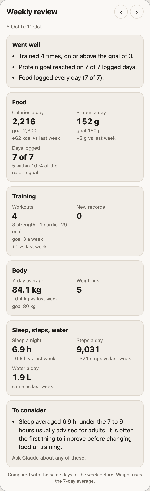
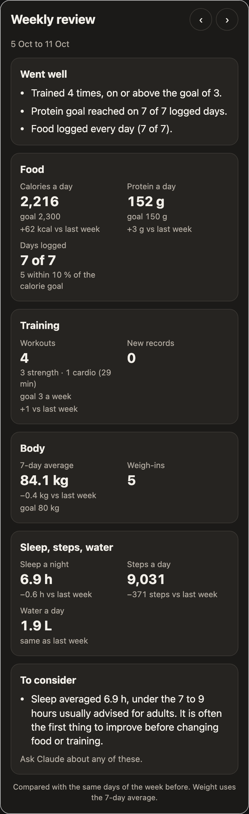
Little things that save time
Recipes from a link
Paste the address of a recipe page. Claude reads the recipe, matches the ingredients to foods and saves it with the method, so it counts toward your plan and shopping list. Pages that do not publish their recipe can be pasted as text instead.
What can I cook?
Tell Claude what is in the fridge. It ranks your saved recipes by how much of each you already have, what is missing, and whether a serving fits the calories you have left today.
Log a meal from a photo
Send a picture of your plate. Claude names what it sees, estimates the amounts, finds the foods in the database and tells you what it assumed. Photo amounts are saved as estimates.
Allergen warnings
When you log or plan a packaged food, Fitwell compares its allergen list and "may contain" traces with your allergies, on top of matching names.
A morning brief
Set up a daily scheduled task in Claude, and it can look at your plan, what is left of your goals and last week's trend every morning without being asked.
Works when Open Food Facts is slow
Packaged products you have looked up before are kept, so a busy Open Food Facts no longer stops you from logging them.
Your data stays yours
- Sign in with your email address. No password: a 6-digit code arrives by email, and only invited addresses can sign in.
- Your food, workouts, weigh-ins and plans are stored in a database restricted to the EU. They are never sold or shared, and not used for ads or analytics. Sign-in sessions use Cloudflare's global storage and hold no health data.
- Ask Claude to export everything, or to delete your account. Deleting erases all of it right away.
- Coming from the private Fitwell app? Import its backup file through a one-time page. Entries you already have are never changed or duplicated.
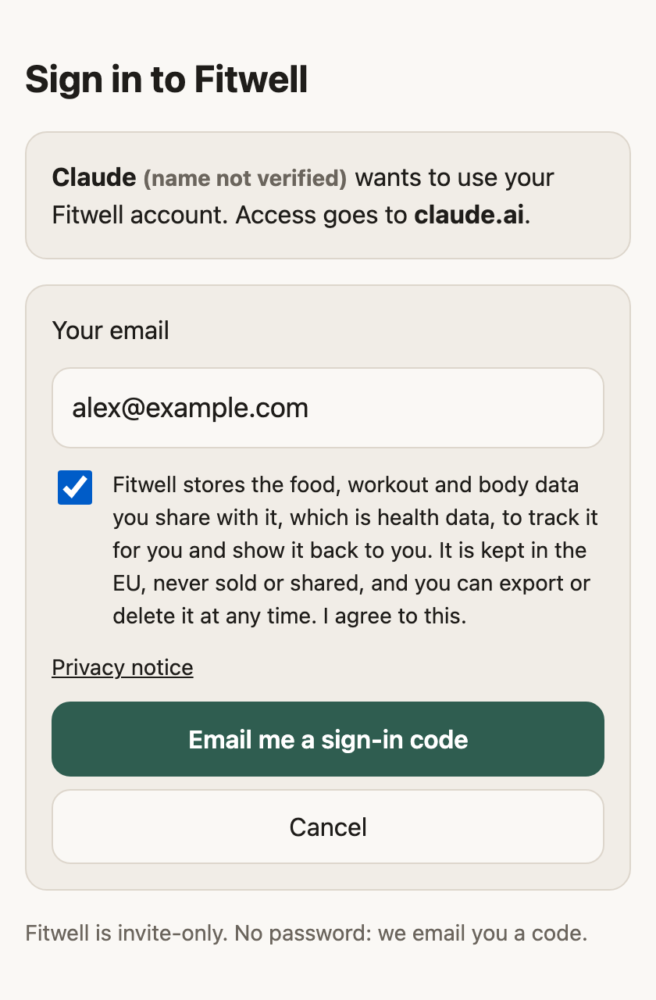
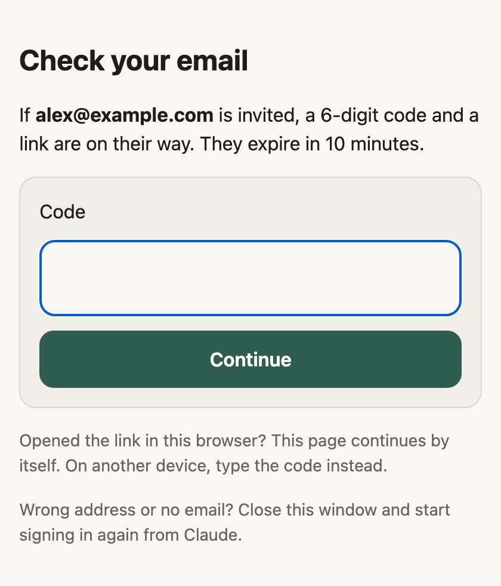
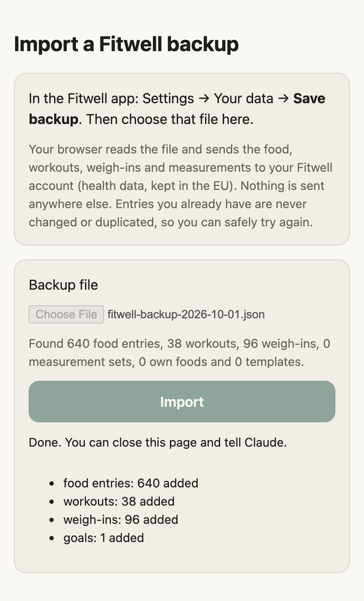
How to join
- Ask for an invite. Email the address you want to sign in with to the Fitwell address below. You can only sign in once you have been added, and you will be asked to confirm one email from Cloudflare, which sends the sign-in codes.
fitwell.fyi@pm.meOpen in your email app - Add the connector in Claude. In Claude on the web or desktop, open Settings, then Connectors, then Add custom connector, and paste this address. It then shows up in the Claude app on your phone too.
https://mcp.fitwell.fyi/mcp - Sign in. Claude opens the sign-in page. Enter your email, tick the consent box and type the 6-digit code from the email.
- Start talking. A good first message is "Set up my Fitwell profile". Claude asks for your height, weight and activity, and can suggest calorie and macro targets.
Good to know
Estimates, not medical advice
Calorie targets start from a standard formula, and after a few weeks of logging Fitwell measures your own burn instead. Workout calories use typical values. Real numbers vary from person to person.
Allergy checks are a help, not a guarantee
Names are matched, and packaged products are checked against Open Food Facts allergen data when it exists. Generic foods and your own foods are matched by name only, and labels can be wrong or missing, so always read them.
Danish food data
Generic foods come from a Danish database with English names. Packaged products use Open Food Facts, which is sometimes slow or missing a product.
Early days
Tested on Claude for desktop, web and iPhone. Android is not tested yet. Things will change and improve.